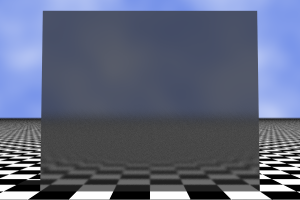

Ray tracing yields dramatic results for scenes with refraction and perfect specular reflections. There are, however, other scenarios where ray tracing must be complemented with other techniques to offer acceptable results.
Light is everywhere... and this is not a poetic license. Light is scattered by the atmosphere so you can find some illumination even in theoretically shadowed places. A white dull wall diffuses some of the light energy it receives. All these familiar phenomena are classified under the global illumination category.
The classic ray tracing algorithm was not designed to deal with global illumination. When a visual ray hits on a non reflective surface, the trace is over for that ray. We check then which light sources are reachable from the intersection point in order to find the resulting color.
Diffuse reflection is supported as an experimental feature in this version of XSight RT. All reflective materials feature a roughness property. When its value is zero, we have a perfect specular reflection. When roughness is greater than zero, reflected rays are distributed in a narrow lobe around the perfect reflection angle. This behavior is simulated by Monte Carlo integration, and the default number of samples is 16.
These two images show a ball reflected first in a perfect reflective box, and then in a box featuring diffuse specular reflection:
|  |
In order to avoid a geometric explosion in the number of traced rays, tracing is stopped after we hit one of these diffuse reflective surfaces. The heuristic is justified because rays gathered from a second bounce would bring no further recognizable information. We are considering other techniques, such as the Russian roulette, for a better simulation.
When several light rays converge in a point due to reflection or refraction, we are dealing with caustics. In the following image, a crystal ball focuses light in a small area in the floor:
Classic ray tracing can't handle caustics, but this time, the explanation is more subtle. Ray tracing works by running light rays backwards: it starts with a "visual ray", i.e., a ray launched by the eye or the camera, and it traces the ray path until a visible object is found. The problem with caustics has to do with concentrating several rays of light in a small area: you cannot trace them backwards.
The best technique for dealing with caustics is the so called photon map. The image above has been rendered using a photon map in POV Ray. The next version of XSight RT must include photon maps for handling caustics and media participation.
Ray tracing, in its classic formulation, cannot handle phenomena related with the ondulatory and quantic nature of light that show in every day life. Perhaps the most interesting of these exotic phenomena are diffraction and interference.
Home | An overview of ray tracing | How does a ray tracer work? | Why XSight RT? | Small Instantiation Language Reference